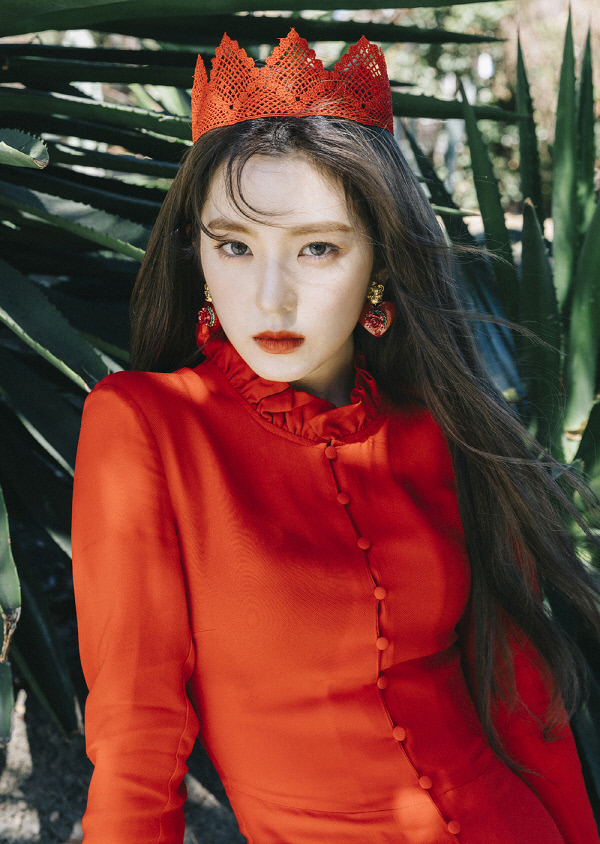

SM娛樂公司表示,Red Velvet追求少女時代和f(x)的中間,即融合兩個前輩組合的個性概念。
也就是說，在繼承f(x)獨特和少女形象的同時，還繼承了少女時代的親切感、活潑可愛的形象，塑造了多樣的魅力。
但實質性的音樂風格與f(x)更加相似。 以R&B或抒情曲爲中心的天鵝絨概念的歌曲也給人一種天上智喜的感覺。
<Debut Song>
-----------------------------------------------------------------------------------------------
Member
-----------------------------------------------------------------------------------------------
本名:
裵柱現 (배주현)
出生: 1991年3月29日（31歲）
國籍: 韓國

本名: 康슬기 (강슬기）
出生: 1994年2月10日[延期入學] (28歲)
國籍: 韓國
本名: 承完孫 (송승완)
出生: 1994年2月21日[延期入學] (28歲)
國籍: 韓國
本名: 朴秀英 (박수영)
出生: 1996年9月3日（26歲）
國籍: 韓國
本名: 金藝琳
(김예림)
出生: 1999年3月5日（23歲）
國籍: 韓國
SM | Kpop World